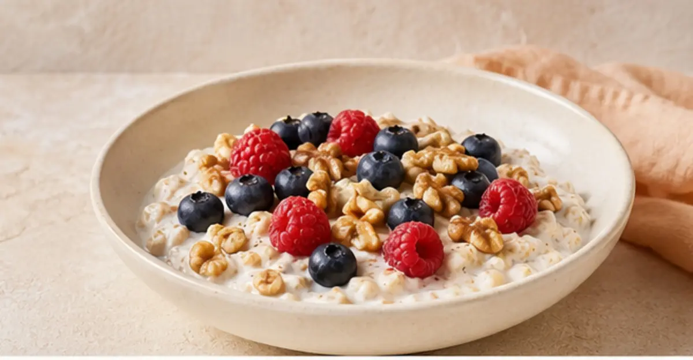

Recetario de bienestar
30 recetas
antiinflamatorias.
Preparaciones inspiradas en el patrón mediterráneo, con pescados, vegetales, aceite de oliva y fermentados.
Sin alcohol · sin embutidos · sin azúcar añadida*
30recetas
8secciones
1guía de seguridad

variedad sabor bienestarUna pauta, no un ingrediente mágico
Cómo usar este recetario
La palabra antiinflamatoria describe aquí un patrón de alimentación inspirado en la dieta mediterránea. Ninguna preparación aislada diagnostica, previene o trata una enfermedad.
01Variedad vegetalIncluye distintos colores a lo largo de la semana.
02Proteínas frecuentesPrioriza pescados y legumbres en preparaciones cotidianas.
03Grasas culinariasAceite de oliva, palta, aceitunas, nueces y semillas.
04Fermentados con criterioRespeta higiene, sal, temperatura y señales de descarte.
Elige según lo que necesitas hoy
Encuentra tu próxima receta
Cargando recetas…
No encontramos coincidencias
Prueba con otro ingrediente o elimina el filtro.
Para guardar o imprimir
Las 30 recetas, también en PDF
Descarga la edición completa con sus fotografías, notas de cocina, seguridad y referencias.